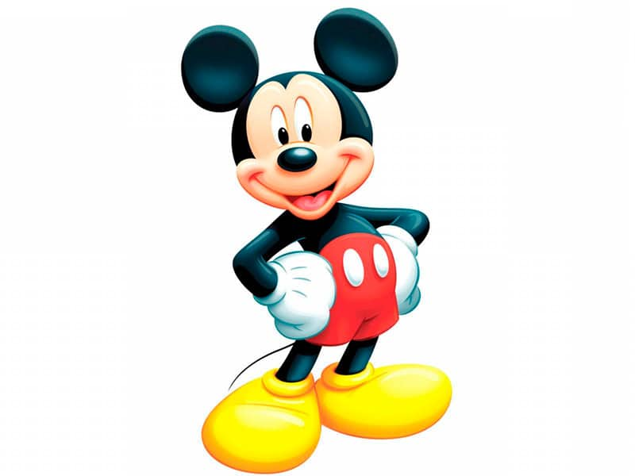

 La programación informática es el arte del proceso por el cual se limpia, codifica, traza y protege el código fuente de programas computacionales, en otras palabras, es indicarle a la computadora lo que tiene que hacer. La programación informática es una de las habilidades esenciales que aprendes cuando estudias informática. Detrás de todos los programas informáticos que conocemos y usamos de manera cotidiana para facilitarnos diversas actividades de nuestro día con día, existe todo un proceso para poderlos crear. Este proceso es conocido como programación, conozcamos un poco más sobre lo que con lleva este proceso. Por medio de la programación se establecen los pasos a seguir para la creación del código fuente de los diverso programas informáticos.